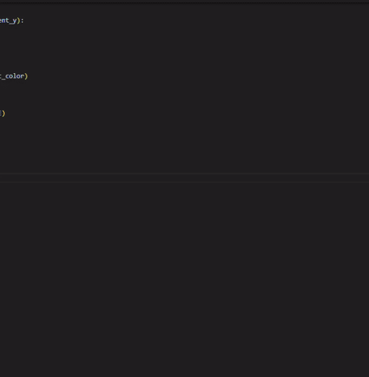

Home
Talks
Teaching
Blog
Projects
Miscellaneous
About
Miscellanous
Play here:
I made a browser game called
Filipino Checkers vs Learning AI
. The AI keeps learning as you play. Try it now at
luisenrico.github.io/filipino-checkers/
.

I enjoy the wonders of coding! Made a
self playing tetris purely if-else statement
,
Computer vision Arduino synergy
,
simple RL in matplotlib (catching the red dot, while avoiding the grey obstacle)
, etc. Some of it I posted on
YouTube
and on my
GitHub
. You can also see behind-the-scenes clips on
TikTok
. My
Linktree
has more, including how I build my free thermodynamics book online.
My
primary blog
and my
other blog
.
I like reading books. Here is a compilation of books I have read:
Goodreads list
.
I really liked Dr. Reina Reyes' talk about AI and Math during CoMaDs 2025.
Access it here
.
I love machines. I compiled some of my favorite ones on
Tumblr
.
DOST Technologies
: someone from this place shared great learning material with me, so I am sharing it here too.
To become a Mechanical Engineer, you have to put in the hours and study hard with pen and paper.
How to become one
.
I am also into cooking. I put my recipes and notes
here
.